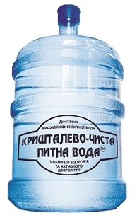

Премиальная вода с 8-ступенчатой системой очистки. Чистый вкус, многоступенчатый контроль качества и доставка прямо к вашей двери.
Заказать первую бутыль бесплатно!
Доставка воды в Броварах после 20.00 — Доставка воды на дом и в офис по городу Бровары. «Кришталево-чиста питна вода» — это очищенная вода высокого качества в городе Бровары, которая подходит для регулярного употребления и приготовления пищи. Ежедневное употребление такой воды — хорошая привычка для поддержания питьевого режима и общего самочувствия. Многоступенчатая очистка обеспечивает стабильный состав, поэтому вода имеет приятный вкус и не имеет запаха.
Удобный сервис доставки воды в квартиры, офисы, рестораны и частные дома города Бровары и Киев. Для Вашего комфорта доставка воды в Бровары проходит в вечернее время после 20.00. Оптовым клиентам производим розлив воды по специальным ценам!
Многоступенчатая очистка гарантирует стабильный состав и природную мягкость воды.
Доступная стоимость при высочайшем стандарте очистки. Первая бутыль для новых клиентов — в подарок!
Точная доставка в Броварах и Киеве. Мы ценим ваше время и привозим воду строго по графику.
качество воды для доставки в Броварах
«Кришталево-чиста питна вода» проходит очистку методом обратного осмоса и озоновой стерилизации — это одна из самых тщательных технологий очистки питьевой воды. Многоступенчатая очистка от примесей и посторонних веществ обеспечивает стабильное качество и приятный вкус.
Стабильное качество и приятный вкус — для ежедневного питья дома и в офисе.
состав воды и доставка воды Бровары
Вода «Кришталево-чиста» благодаря высокому уровню очистки, обладает приятным чистым вкусом и стабильным показателем pH около 7,5.
наши сертификаты качества доставки воды Бровары
Вода – это источник жизни, не лишайте свой организм в возможности быть абсолютно здоровым.
Доставка воды в Броварах «Кришталево-чиста» для Вашего долголетия!
Чтобы заказать воду в городе Бровары, просто позвоните нам прямо сейчас!
Позвоните нам или напишите в Telegram-бот. Мы подберем удобное время доставки.
Наш курьер доставит бутыли точно в срок прямо в вашу квартиру или офис.
Пейте чистую, здоровую воду и чувствуйте прилив энергии каждый день.
Удаление песка, ржавчины и крупных взвесей.
Полное удаление хлора и органических соединений.
Удаление 99% всех растворенных примесей и солей.
Мощная стерилизация от вирусов и бактерий.
Насыщение воды O2 для свежести и вкуса.
Возврат необходимых Mg, Ca и K в точной дозе.
Установка стабильного уровня pH 7,5.
Финальная стерилизация перед розливом.
Оптимальный выбор для дома и офиса. Экологичная многоразовая тара, идеально подходящая для любого кулера.
"Заказываю воду Crystal Water уже два года. Очень удобно, что привозят вечером — мне как раз подходит по графику работы. Вода действительно вкусная!"
"Лучший сервис в Броварах. Всегда вежливые курьеры, вода чистая, никакой примеси хлора. Дети пьют с удовольствием."
"Пользуемся водой в офисе. Качество стабильное, цена адекватная. Спасибо за оперативность и первую бесплатную бутыль!"